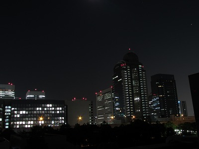

最終更新:2015.10
All rights reserved by Shibuya Makuhari High School Astronomy Club
All rights reserved by Shibuya Makuhari High School Astronomy Club
今日の一枚

2015年5月 夜間観測にて
お知らせ
高校天文部は中三の秋から入部可能です
最近の活動
(2015年10月時点)
| 期間 | 内容 |
| 2015.11 | ホームページの大幅リニューアル |
| 2015.9 | 文化祭。プラネタリウムを上映 |
| 2015.8 | 八ヶ岳にて3泊4日の夏合宿 |
| 2014.12 | 会津にて2泊3日の冬旅行 |
| 2014.9 | 文化祭。プラネタリウムを上映 |
| 2014.8 | 八ヶ岳にて2泊3日の夏合宿 |